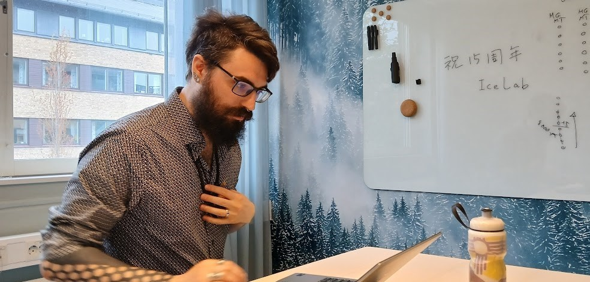
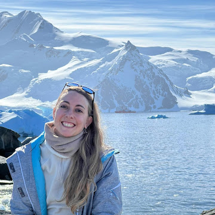
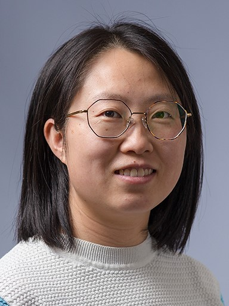
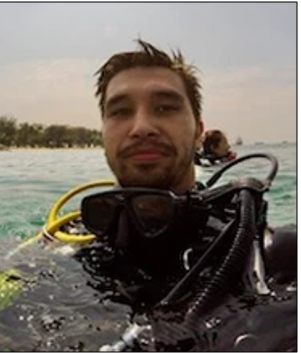
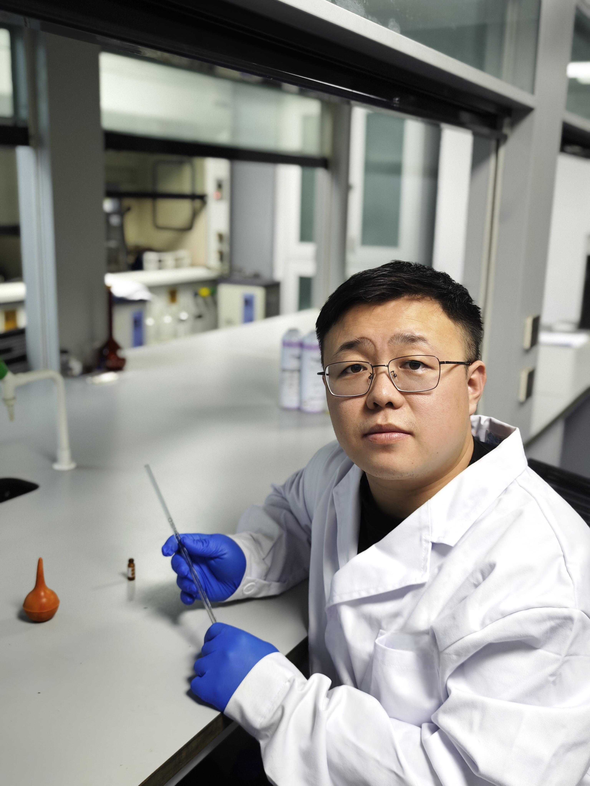
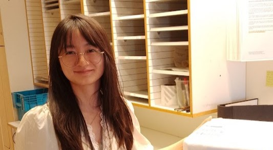
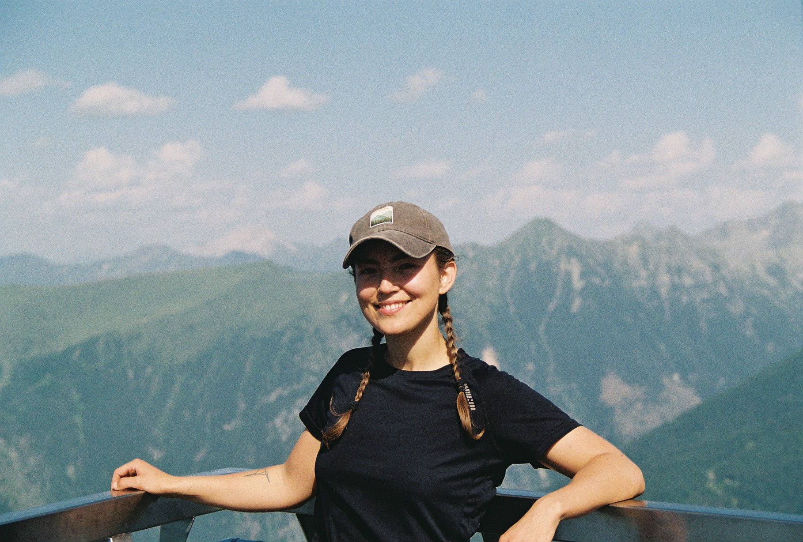
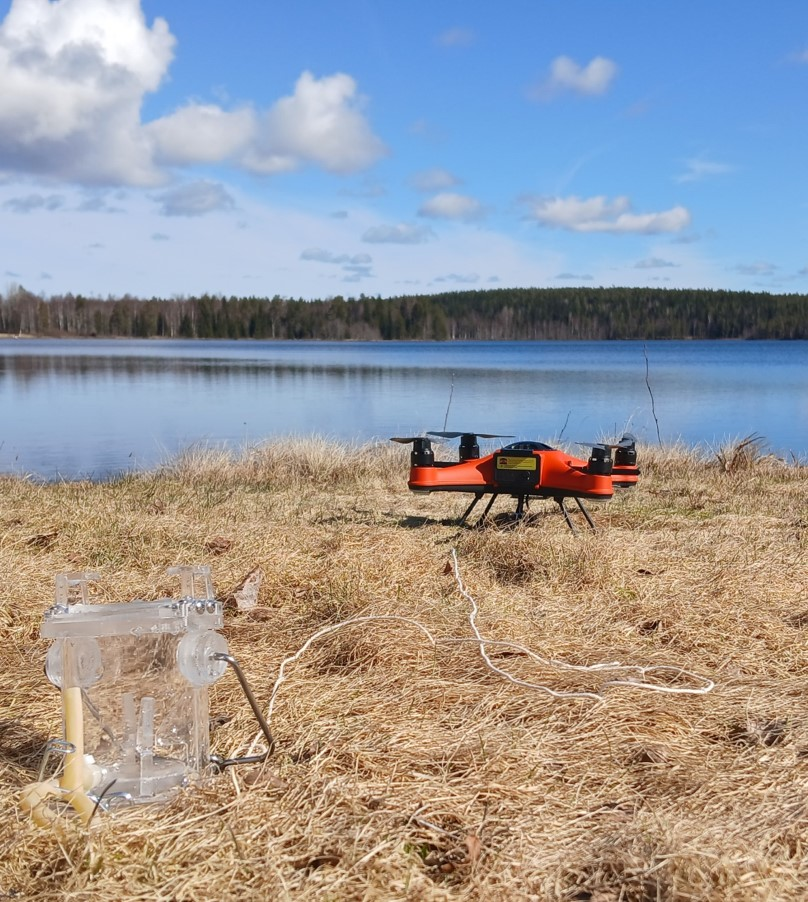
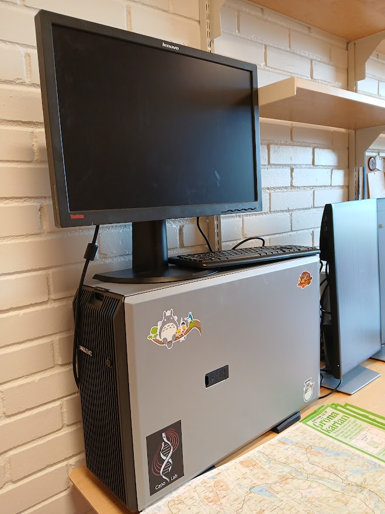

Lab members
Group leader

Lab Director
Assistant Professor
Eric Capo is Assistant Professor at the Department of Ecology and Environmental Science at Umeå University (Sweden). He has a PhD in molecular paleoecology with expertise in aquatic microbial ecology and is the founder of the sedaDNA scientific society, a network about sedDNA research.
- Expertise in molecular paleoecology and aquatic microbial ecology
- Founder of the sedaDNA scientific society
- Specialized in sedimentary DNA research and applications
- Leading research on microbial responses to environmental changes
Contact: eric.capo@umu.se
Postdoctoral researchers

Postdoctoral Researcher
Corentin Fournier is a postdoc in Capo lab co-supervised by Eric Libby (IceLab). His work aims to apply microbial metabolic models into environmental genomics data to better understand biogeochemical interactions in past and modern environments, with a primary focus on Baltic Sea and Swedish West Coast fjords.
Contact: corentin.fournier@umu.se

Postdoctoral Researcher
Flúvio focus is a post-doc in David Wardle investigating how soil microbial communities shape and respond to ecological processes across a chronosequence syst i.e., changes in organic matter stocks, nutrient fluxes, decomposition, and experimentally induced loss of plant diversity.
Contact: fluvio.modolon@umu.se

Postdoctoral Researcher
Isabel Sanz-Sáez is a postdoc in Erik Björns group at the Chemistry Department of the Umeå University. Her research focus on exploring the intricate relationships between microbes and environmental pollutants, including both legacy and emerging contaminants.
Contact: isabel.sanz@umu.se

Postdoctoral Researcher
Dongna Yan is a postdoc working in Zhisheng An group at the Institute of Earth Environment (Chinese Academy of Sciences, Xi'an, Shaanxi). Her current research focus on the study of past ecological environmental changes recoded by sedDNA and geochemical indicators.
Contact: yandn@ieecas.cn

Postdoctoral Researcher
Li Zhao is a post-doc working in the field of marine microbial ecology in the group of Agneta Andersson, focusing on how dissolved organic matter (DOM) influences microbial community function, particularly in the context of climate change.
Contact: li.zhao@umu.se
PhD students

PhD Student
Júlia Dordal Soriano is a PhD student from Andrea Garcia Bravo at the ICM-CSIC (Barcelona). Her current research focuses on the study of microbial processes and environmental factors that control mercury transformations in the global ocean.
Contact: julia.dordal.18@gmail.com

PhD Student
Nicola Gambardella is a PhD student from Catarina Magalhães group at "LaCaixa" INPhINIT fellowship program at CIIMAR (Porto, Portugal) working on prokaryotic communities involved in permafrost N and Hg cycling with molecular and bioinformatic approaches.
Contact: ngambardella@ciimar.up.pt

PhD Student
Sébastien Leveque is a PhD student from Nick Kamenos group investigating the acclimation and adaptation of the coral holobiont. He mainly focus on the symbiotic community composition within coral reefs using molecular ecology tools.
Contact: sebastien.leveque@umu.se

PhD Student
Yangzheng Liu is a visiting PhD student in Changwei Lü´s group at the Inner Mongolia University (China). His research focuses on lake environmental change and paleoecological reconstruction, integrating sedDNA and geochemical proxies to resolve coupled climate–human drivers at centennial–millennial scales.

PhD Student
Anton Sandström is a PhD student from Per Stenberg group exploring the ecosystems of the Skåne region using an unique eDNA sets from air filters to study agricultural pathogens.
Contact: anton.sandstrom01@umu.se

PhD Student
Meifang Zhong is a PhD student working on microbial metabolisms of deoxygenated marine systems with molecular (paleo)ecology approaches (metagenomics, metatranscriptomics, MAGs).
Contact: meifang.zhong@umu.se
Undergraduate students

Manuela Grane
Master Student
Manuela Grane is a Master student studying the reliability of metabarcoding to assess the composition of lake fish communities from drone-sampled water samples in Abisko region.
Others

Drones Team
Research Equipment
Dragonfly, Firefly and Butterfly are SwellPro FD3 waterproof drones used for environmental monitoring. They dedicate their lives to skimming the surface of lakes, collecting water samples for eDNA analysis.

Totoro
Computing Server
Totoro is a T550 server equipped with 140 GB of RAM, 16 threads, and a NVIDIA Tesla T4 GPU. Its life mission is to support the Capo lab by processing metabarcoding data, constructing phylogenetic trees, and handling all the quick, everyday bioinformatics tasks.
Alumni
- Baraa Rehamnia (Post-doc, 2024-2025)
- Kajsa Brändström (Master student, 2025)
- Maïlys Picard (Post-doc, 2023-2025)
- Lourdes Martínez-García (Post-doc, 2023-2025)
- Bumin Kaan Kiraz (Erasmus Bachelor student, 2025)
- Kari-Anne Van der Zon (visiting PhD student, 2025)
- Saga Edling (Bachelor student, 2024)
- Marissa Despins (visiting PhD student, 2024)
- Yu Zhao (visiting PhD student, 2024)
- Fredrik Olajos (PhD student, 2023-2024)
- Anthony Khairallah (Master student, 2024)
- Panagiota Xhantopoulou (visiting PhD student, 2024)
Main collaborators
- Inger G Alsos (UiT, Tromsø, Norway)
- Agneta Andersson (Umeå University, Sweden)
- Anders Andersson (KTH, Stockholm, Sweden)
- Elinor Andrén (Södertörn University, Huddinge, Sweden)
- Linda Armbrecht (University of Tasmania, Australia)
- Fabien Arnaud (EDYTEM, Le-Bourget-du-lac, France)
- Cecilia Barouillet (INRAE CARRTEL, Thonon-les-Bains, France)
- Stefan Bertilsson (SLU, Uppsala, Sweden)
- Christian Bigler (Umeå University, Sweden)
- Richard Bindler (Umeå University, Sweden)
- Erik Björn (Umeå University, Sweden)
- Heidi Burdett (Umeå University, Sweden)
- Pär Byström (Umeå University, Sweden)
- Andrea Garcia Bravo (ICM-CSIC, Barcelona, Spain)
- Marco Coolen (Curtin University, Australia)
- Didier Debroas (LMGE, Clermont-Ferrand, France)
- Isabelle Domaizon (INRAE CARRTEL, Thonon-les-Bains, France)
- Laura Epp (Konstanz University, Germany)
- Charline Giguet-Covex (EDYTEM, Le-Bourget-du-lac, France)
- Caitlin Gionfriddo (SERC, Edgewater, USA)
- Irene Gregory-Eaves (McGill University, Canada)
- Peter Heintzman (Stockholm University, Sweden)
- Nick Kamenos (Umeå University, Sweden)
- Qi Lin (NIGLAS, Chinese Academy of Sciences, China)
- Marie-Eve Monchamp (McGill University, Montreal, Canada)
- Kevin Nota (MPI_EVA, Leipzig, Germany)
- Laura Parducci (University of Rome, Italia)
- Mikkel Winther Pedersen (Globe Institute, Copenhagen, Denmark)
- Frances Pick (University of Ottawa, Canada)
- Jarone Pinhassi (Linnaeus University, Kalmar, Sweden)
- Ben Peterson (University of California-Davis, USA)
- Alexandra Rouillard (UiT, Tromsø, Norway)
- Johan Rydberg (Umeå University, Sweden)
- John Smol (Queen´s University, Kingston, Canada)
- Trisha Spanbauer (Toledo University, USA)
- Göran Spong (SLU Umeå, Sweden)
- Kathleen Stoof-Leichsenring (AWI, Potsdam, Germany)
- Narumi Tsugeki (Matsuyama University, Japan)
- Aurele Vuillemin (GFZ Potsdam, Germany)
- Susie Wood (Cawthron Institute, New-Zealand)